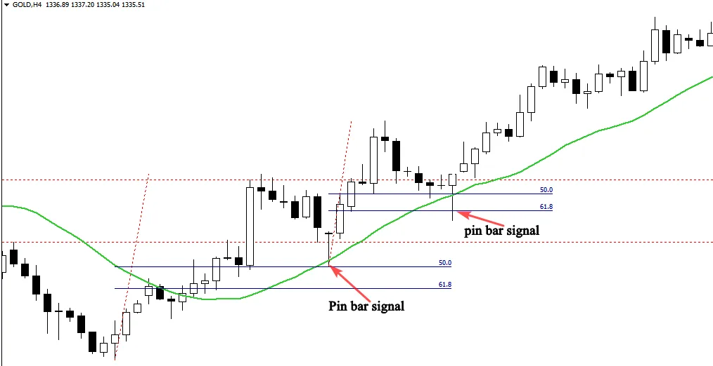

Confluence happens when many technical indicators generate the
same signal, this trading concept is used by price action traders to filter
their entry points and spot high probability signals in the market.
It doesn’t matter if you are beginner or advanced trader, trading with
confluence is a must, because it will help you focus on quality setups
rather than quantity, and it will enhance tremendously your trading
performance.
Confluence means combination or conjunction, it is a situation in
which two or more things join or come together, for example, if we are
looking for a pin bar signal, we need to find other factors of confluence
to confirm our entry; we are not going to take any pin bar that we find
on our chart.
Factors of confluence:
The trend: it is one of the most important factor of confluence, this is
the first thing that most successful traders look for on their charts, you
can’t trade any setup without identifying if it is in line with the
direction of the market or not.
A bearish pin bar in a downtrend is more powerful signal than the one
in a range-bound market.
Support and resistance levels and supply and demand areas: these
major levels have a significant importance in the market, because all
big participants watch these specific areas.
Moving averages: i personally use the 8 and 21 moving average, this
technical trading tool acts as dynamic support and resistance, and it is
a very important factor of confluence in trending markets.
Fibonacci retracement tool: I use the 61% and 50 % Fibonacci
retracement to find the most powerful areas in the market.
Trend lines: drawing these lines on your charts give us an idea about
the market direction and help us find the most important reversal
points in the market.
When you are analyzing your chart, you are not obligated to find all
these levels to determine whether the trade is valid or not.
If you can find just one or two factors of confluence that come up
together with a good pin bar setup, this is quite enough to make a
profitable trade.
For example: an obvious pin bar signal near support or resistance level
in line with the direction of the market.
See the illustration below:
In the example above, we have a high probability setup with four
factors of confluence.
1- The Trend: the market is trading up which means that we have to
follow the trend and look for a buying opportunity.
2-The level: The support level is an important key level in the
market.as you can see, price broke out of the resistance level that
becomes support and pulled back to it.
3-The signal: The formation of the bullish pin bar after the
retracement back to the resistance level that becomes support.
4-Another signal: The rejection of the pin bar from the support level,
and the 21 moving average that acted as a dynamic support level.
All these factors work together to give us powerful trading signal to
buy the market.
See another example:
I will give you some trading examples to help you understand how to
trade the pin bar candlestick pattern with the trend. and how to use
the confluence concept to confirm your entries.
See the chart below:
This is the NZDUSD daily chart, as you can see the market is trending down. this is the first information that we gather from this chart. After the breakout of the support level that becomes resistance, the price retraced back to this level, and formed a pin bar candlestick pattern.
The formation of the pin bar near the resistance level indicates that
the retracement move is over, and the beginning of an impulsive move
is likely to happen.
When we put the 21 moving average and the Fibonacci retracement
on the chart, we see that the pin bar is rejected from these levels which
indicates that this level is very important and sellers are willing to push
the market lower.
Here in this example we have solid reasons to sell the market, the first
reason is the downtrend.
The second reason is the formation of the pin bar near the resistance
level which indicates the end of the pullback and the beginning of a
new move downward.
The third reason is the rejection of the pin bar from the resistance
level, and from the 21-moving average,
The last reason is the pin bar rejection from the 50% Fibonacci
retracement level which is considered to be one of the most powerful
key levels in the market.
Look at the chart below to see what happened next:
As you can see in the chart above, our analysis was right, because it was based on solid reasons to enter the market. This is the method that i want you to learn to be able to trade the market successfully. Look at another chart below:
The chart above shows two important buying opportunities.
The market was trending up, the formation of the first pin bar after the
retracement back to the support level was a high probability entry.
What confirms our entry is the rejection from the 21-moving average,
and the 50% Fibonacci retracement.
The same thing happens with the second pin bar that allowed us to
enter the market again and make more profits.
We can say that a market is ranging when prices don’t make any higher
high and higher low and start trading horizontally between a definable
level of support and a definable level of resistance.
Once i see that the market changes its behavior, i have to change my
tactics and adopt a trading strategy that fits this new market condition.
To confirm a ranging market, i have to look for at least two touches of
support level, and two touches of resistance level, and once i have
identified the range, then it becomes very simple to trade it by going
long when prices reaches the support level and going short when
prices approach the resistance level.
See below an example of a range-bound market:
As you see, as prices approach the key support or resistance level, we
have an opportunity to buy or sell the market; we need just to wait for
a clear price action setup such as a pin bar candlestick.
Look at the illustration below:
The illustration above shows us three trading opportunities, let me
explain you how you can trade them successfully:
1-The first one is a pin bar rejected from the support level, you can
place a buy order after the pin bar closes, or you wait for the market
to touches the 50% of the pin bar range.
Your stop loss should be placed above the support level, and your
profit target must be placed near the resistance level.
The risk reward of this trade is very attractive.
2-The second trading opportunity occurs near the support level, you
place a buy order after the close of the pin bar, and your stop loss
should be below the support level. your profit target is the next
resistance level.
3-The third setup is an obvious buying opportunity; as you can see the
market was rejected from the support level and formed a pin bar to
inform us that buyers are still there, and the market is likely to bounce
from the support level.
Trading from major key support and resistance levels is the easiest way
to make money trading range-bounds markets, don’t never try to
trade any setup if it is not strongly rejected from these areas.
The second strategy is about trading in the direction of the breakouts
of major key levels or waiting for the prices to retrace back to the
breakout point and then you go long or you short the market.
See the example below:
The figure above illustrates a range-bound market, the price broke out
of the support level and retraces back to the point of the breakout,
and the formation of an obvious pin bar indicates a high probability
signal to short the market.
This is how professional traders trade ranging markets based on this
price action signal.
How to confirm pin bar signals using technical indicators
Using technical indicators to confirm your entries will increase your
probability of the trade being profitable, i’am not telling you that you
have to focus on indicators to generate signals, because this will never
work for you, but if you can combine your price action strategies with
the right indicators, you will be able to filter your signals and trade the
best setups.
One of the best indicators that i use to confirm my entries when i
examine a range-bound market is the Bollinger bands indicator.
This technical trading tool was developed by John Bollinger to measure
a market’s volatility.
The strategy is very simple, we will combine horizontal support and
resistance with the upper and lower Bollinger bands false breakout, if
prices are rejected from major key levels and from the bands, this is a
confirmation that the market will bounce from these levels.
See an example below:
If you look at the chart above, you will notice how the Bollinger bands
act as a dynamic support and resistance, when the market approaches
the upper or the lower bands, prices bounce strongly.
So if we see that a pin bar is rejected from a horizontal key level and
from bands, this is a clear confirmation to buy or sell the market.
This confirmation strategy is very simple, and it will help you decide
whether to take a trade or ignore it, because trading is all about
emotions, and sometimes, you will spot a nice pin bar signal in a range
bound market, but you will find it difficult to make a decision.
What you have to do in this case is simple, just put your Bollinger bands
on your chart, and if you see that the signal is rejected from horizontal
levels and from the bands, don’t over thinking about what you should
do next.
Just execute your trade, place your stop loss and profit target then stay
away and let the market do the work for you.
See another illustration below:
The daily chart above shows us how this indicator could help us
execute our trades with confidence; the false breakout of the
resistance level that was made by the pin bar was a powerful signal to
short the market. The trade was confirmed by the false breakout of
the upper band as well.
Remember that this technical indicator is used just as a confirmation
tool in range-bound markets, don’t use it to generate signals, use it
always in combination with horizontal key levels, and you will see how
this strategy will affect positively your trading account.
In conclusion, i recommend you to practice these strategies as much
as you can before you open and fund your trading account.